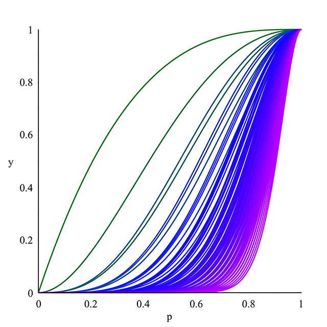
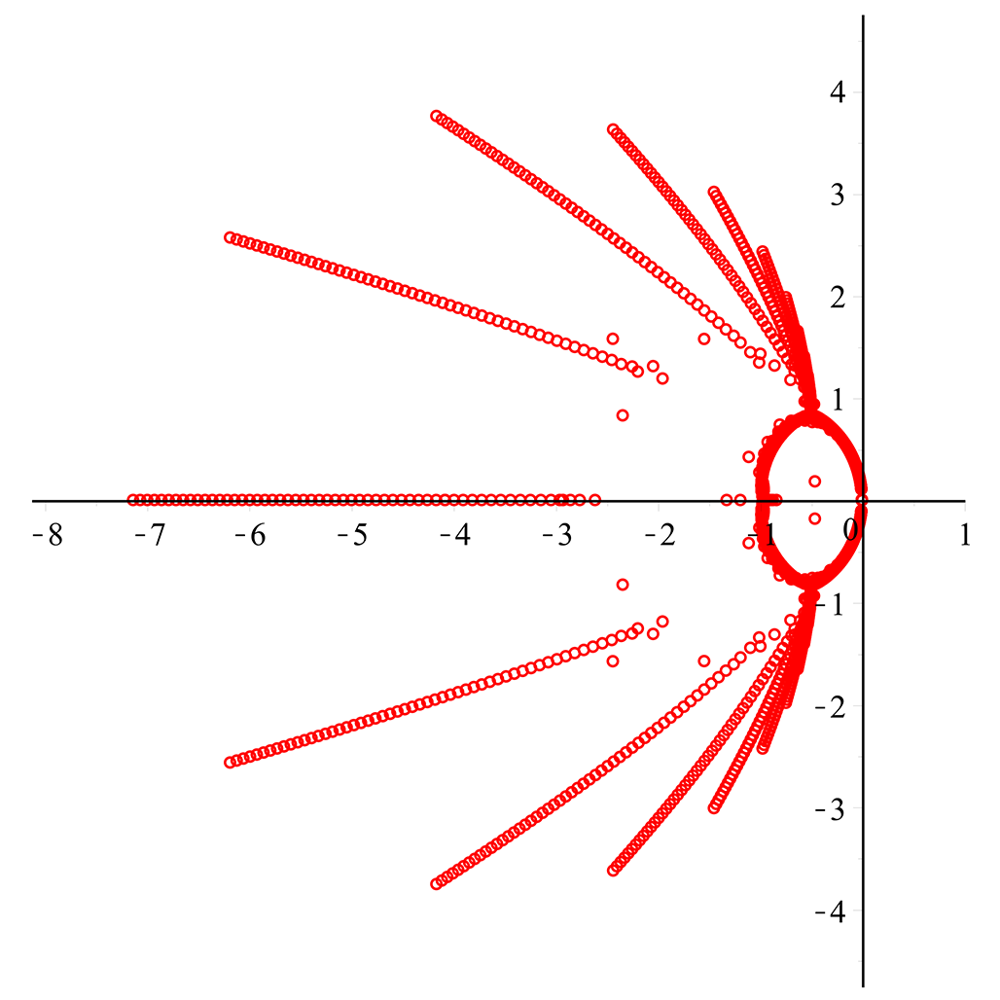

Graph Theory

My two major works of graph theory research are
- Network Reliability and the Reliability Polynomial [April 2014]
- Honours thesis completed in requirement for BSc Combined Honours, Dalhousie University
- On the Roots of Domination Polynomials, with Jason I. Brown [Summer 2012]
- Research completed as part of NSERC Undergraduate Student Research Award
- Paper published in "Graphs and Combinatorics", Volume 30, Issue 3, pp 527-547, May 2014

ON THE ROOTS OF DOMINATION POLYNOMIALS